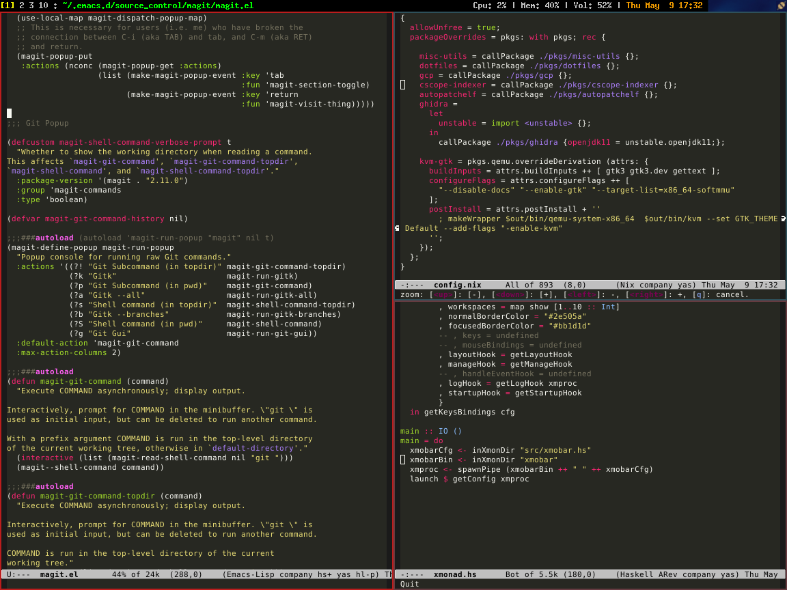

Let's talk about development environment
Published on May 8, 2019 under the tag nixos, emacs, xmonad
If you are a developer, then you probably value the software stack that you use for your daily tasks. I am not talking about specific programming language that you use to develop the next gen product X in your shiny startup Y. I am talking about more basic software. The operating system, the desktop GUI environment, the code editor and a set of productivity tools that you select to make your life easier.
For me the journey to build my software stack was full of tries and errors and I am still in the middle of it waiting for new adventures.
The first big discovery for me was focusing on Emacs as the one and only editor for me.
I was familiar with Emacs from my lisp studies in university but then I was using
it in vanilla form without any customizations. One day I observed a power user
working in XEmacs (at that time XEmacs project was superior to the gnu Emacs project).
It was amazing. Working in complete state of “flow” without constantly switching windows,
clicking buttons or even moving the mouse. It was fast and powerful and it had
everything inside (terminal, file manager, man pages). I started using XEmacs
first with the power configuration I borrowed from that guy and later
I built my own configuration which I maintain and update to this date. Since then
the gnu Emacs project came back to life and I switched to gnu Emacs which was now
delivering new releases in much faster iterations.
Switching to Emacs gave me great power and full control of my coding workflow. I was
able to overcome any obstacles by programming Emacs in lisp or by searching
for extensions online. Still my desktop environment was not perfect.
When I started programming I was using windows desktop. Since most of my work was
on a linux environment, I was running X server from cygwin on my windows desktop
and then connecting to the linux through ssh and X forwarding Emacs to my windows
desktop. Later I completely switched to linux and started running ubuntu distribution
as my main desktop client both at home and at work.
I started to maintain repository of notes with recipes of how to install ubuntu system from scratch with all the software I use and all the desktop customization I want. Installing system from scratch required to walk step by step through my notes and configuring keyboard shortcuts, fonts, display settings, installing all the programs I use and then configuring them. At the same time ubuntu was growing and publishing new releases. The default desktop changed to unity but I didn’t like the new design. The GUI felt heavy and not responsive on my home pc (which was not the latest and greatest hardware). At first I switched to gnome classic but in later releases this option was removed and I decided to try xubuntu which was the same ubuntu distribution but with the light xfce desktop environment.
Working on xubuntu was ok. It was light and fast and I customized it exactly as I wanted.
At the same time I started to learn about functional programming and taking a special
interest in Haskell programming language. As I became more fluent in writing code in Haskell,
I started to explore the Haskell applications ecosystem. I stumbled upon Xmonad,
which is a tilling windows manager which is very customizable and can be programmed in Haskell.
It reminded me Emacs which is also very customizable and can be programmed in Lisp. The concept
of tiling windows manager was new for me but I have always hated the constant need to adjust and
switch between floating windows.
I installed Xmonad and configured it as new xsession on the xubuntu system. I worked with
existing Xmonad configurations that I’ve found on github and modified them to match my own
preferences. The result was fast and customizable desktop experience. With shortcuts and
modifications matching my work flow. Each time I wanted to change something all I needed to do
was to update my Xmonad configuration with several lines of Haskell code.
Installing new software on my dekstop was always big issue for me. I wanted to avoid “polluting”
my distribution, but at the same time I wanted to try new software. The solution was to use
virtual machines through kvm or containers through docker. One day I read about new way to manage
software packages through software called Nix which was very popular among haskell developers.
The idea of Nix is to replace the global installation locations (/lib, /bin, etc.), with per
package unique locations. These locations include unique hash which computed based on the
package dependencies and it’s contents. The bottom line is that you can easily install new versions
of software (even versions that rely on different versions of the same library - no dll hell).
Additionally it allows you to easily revert back if the new package doesn’t work or even try the
new package inside isolated environment (nix-shell).
There are two ways to work with Nix. At first I used it as additional package manager together with
the default apt/dpkg to handle ubuntu packages. But Nix has it’s own linux distribution called
Nixos. It uses Nix package manager to configure the software and boot linux kernel. Everything
can be configured in descriptive way using the Nix expression language and all the advantages
of Nix package manager can be applied to the whole system. For example you can switch to new
kernel by changing configuration line and if the system doesn’t work as expected you can easily
revert to old version. Switching to Nixos solved for me two problems. The first was the problem of
installing all my software including os from scratch in deterministic way. Now I have
configuration of all my software and after bootstrapping Nixos I can just apply my configuration and
I am getting all my software configured and ready. The second problem was of installing new software
without “polluting” the distribution. Since Nix doesn’t have global state and each package can coexist
with each other package, trying new things is easy and after I am done I can invoke nix-collect-garbage
to get rid of leftovers.
So today my development environment is based on Emacs, Xmonad and Nixos. Configuration of each component
is maintained in separate github repository
